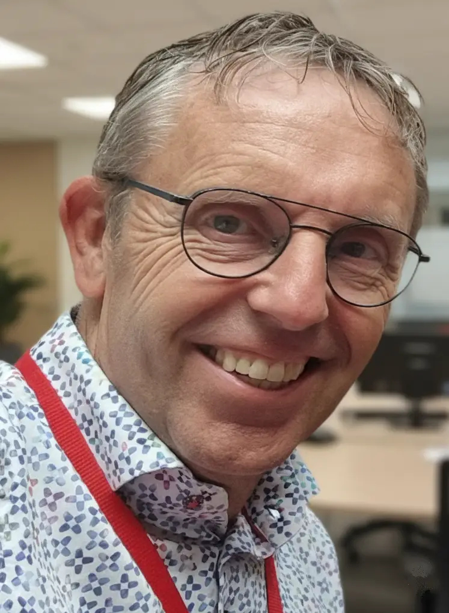

35 jaar IT. Één overtuiging: techniek moet werken voor mensen.
Van HP3000 Systems Engineer in 1985 tot Lead Architect bij Shell. Sinds 2026 zelfstandig, met dezelfde overtuiging als op dag één.

- Vestiging
- Spijkenisse
- Talen
- Nederlands (moedertaal), Engels (professioneel)
- Certificaten
- TOGAF, BizzDesign, SAP R/3 Basis
- Hobby's
- Windsurfen, snowboarden, hardlopen, huisautomatisering, 3D-printen
Ik ben Frank van der Vaart, freelance IT-architect gevestigd in de regio Rotterdam en Den Haag. Via VSDA Solutions & Consultancy help ik organisaties hun IT-architectuur in lijn brengen met hun bedrijfsstrategie. Pragmatisch, menselijk, en met een scherp oog voor wat écht werkt in de praktijk.
Mijn carrière begon in 1985 als HP3000 Systems Engineer bij Shell Pernis Refinery. Wat volgde was een loopbaan van meer dan 35 jaar waarin ik groeide van hands-on engineer naar Lead Architect bij een van de grootste bedrijven ter wereld.
In het voorjaar van 2025 maakte ik een bewuste pas op de plaats. Bijna een jaar lang reisde ik door Europa in mijn camperbus, tijd om te reflecteren en op adem te komen. De aanleiding was niet alleen vermoeidheid, maar ook een groeiend gevoel van onvrede: de energietransitie bij Shell ging mij te langzaam, en werd zelfs verder teruggedraaid. Die ervaring versterkte mijn overtuiging dat duurzaamheid geen bijzaak is.
"Niet alleen een oplossing neerzetten, maar zorgen dat mensen daarna hun werk makkelijker en sneller kunnen doen. Dat is voor mij de maatstaf van geslaagd werk."
Sinds april 2026 ben ik actief als zelfstandig IT-specialist. Ik kies opdrachten op basis van inhoud en complexiteit, maar duurzaamheid weegt mee in die keuze.
Verder ben ik geïnteresseerd in cybersecurity en vind ik het leuk om mensen daar bewuster van te maken. Simpele dingen maken het verschil. Ik kom nog steeds veel mensen tegen die geen password manager gebruiken en al jaren dezelfde wachtwoorden hergebruiken op meerdere websites.
Werkervaring
Freelance IT Specialist | Senior Solution Architect | Lead Architect
Helpt organisaties hun IT-architectuur in lijn te brengen met hun bedrijfsstrategie. Pragmatisch, snel inzetbaar, zonder overhead. Werkt het best in omgevingen met echte complexiteit.
Lead Architect Intelligent Operations
De roadmap voor Shell's Global Intelligent Operations en observability ontworpen, samen met ServiceNow, Dynatrace, Moogsoft en SolarWinds.
Lead Architect Legal, Ethics & Compliance
Marktscans en solution-selectie geïdentificeerd voor juridisch documentbeheer, screening van derde partijen en intellectueel eigendom. Architectuur en implementatie begeleid van een wereldwijde e-signature oplossing en een zeer vertrouwelijk IE-beheersysteem met hoogwaardige beveiliging.
Senior Solution Architect Finance
Herontwerp van Shell's wereldwijde betalingssysteem met hoge vertrouwelijkheid en integriteit. Architectuur-roadmap voor finance opgesteld.
Solutions Architect
Schaalbare SaaS-architectuur ontworpen voor het wereldwijde wervingsproces, met een soepele kandidaatervaring en lagere cost per hire.
Business Analyst, Unit Manager & Application Operations Manager
Interface tussen business en IT-ontwikkelteam, leidinggegeven aan een SAP R/3 HR-consultancyteam (ING, NN, ASR, Shell) en een wereldwijd "follow the sun" support-team aangestuurd.
SAP R/3 Basis consultant & HP3000 Systems Engineer
Start van de loopbaan als hands-on engineer, gegroeid naar senior SAP R/3 Basis consultant met wereldwijde implementaties (o.a. Singapore, Duitsland, Brazilië, VS).
Vaardigheden
Zin om samen te werken?
Ik hoor graag wat er bij jouw organisatie speelt.